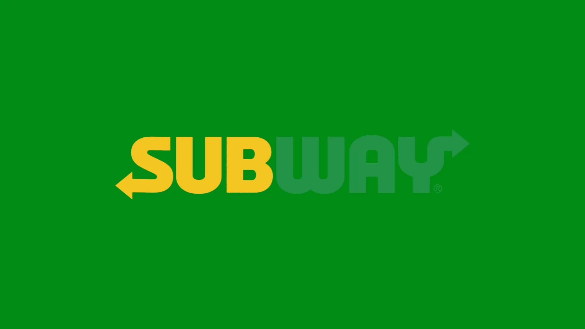
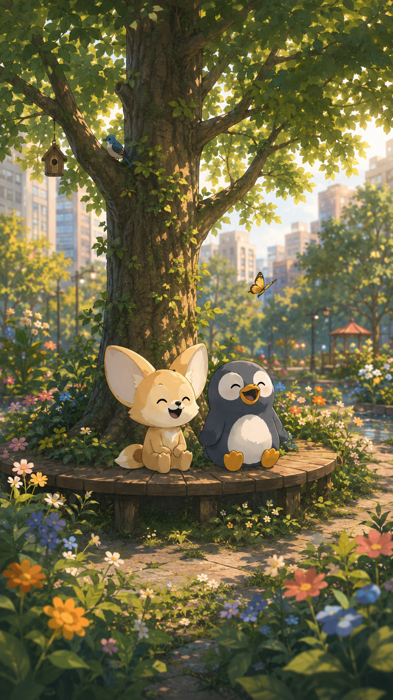
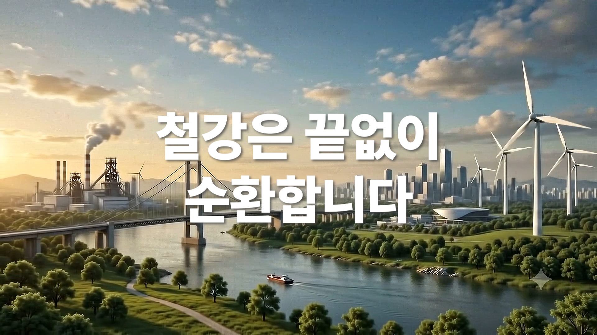
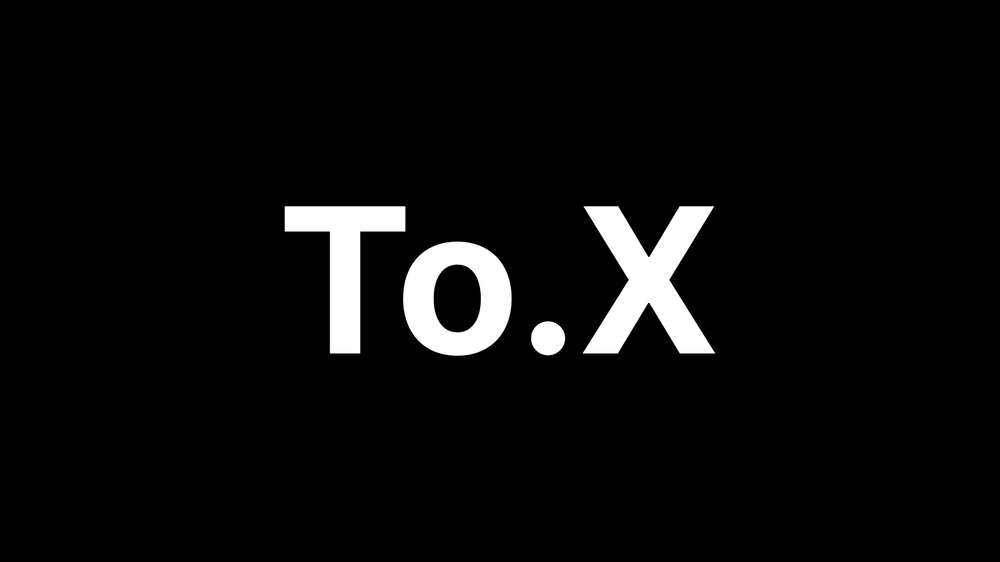
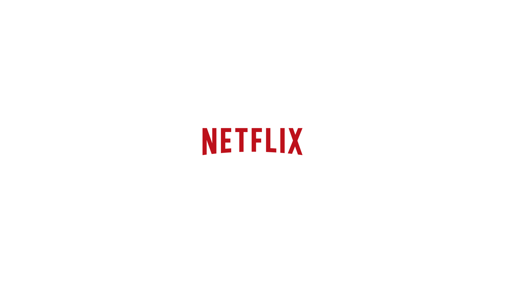
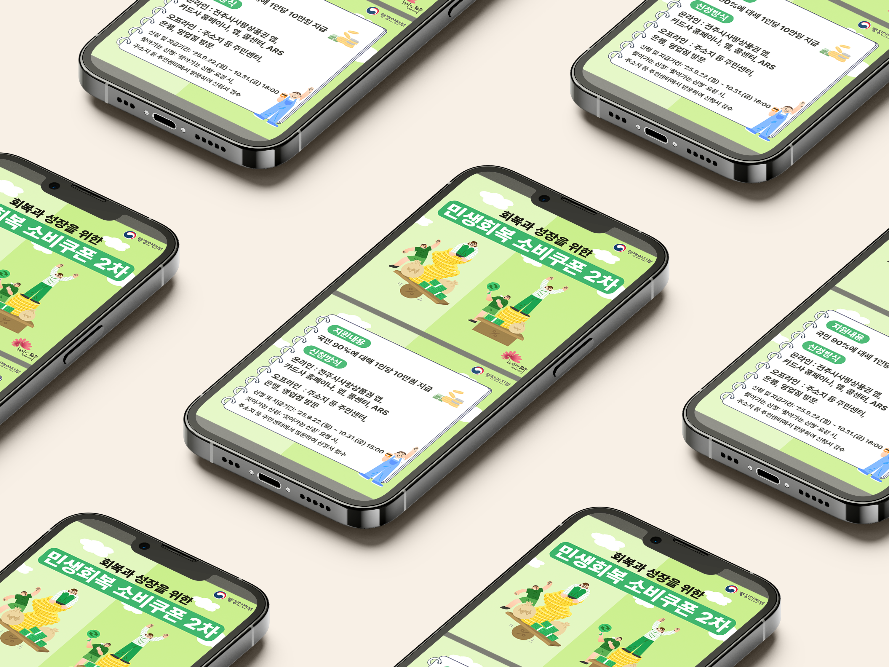
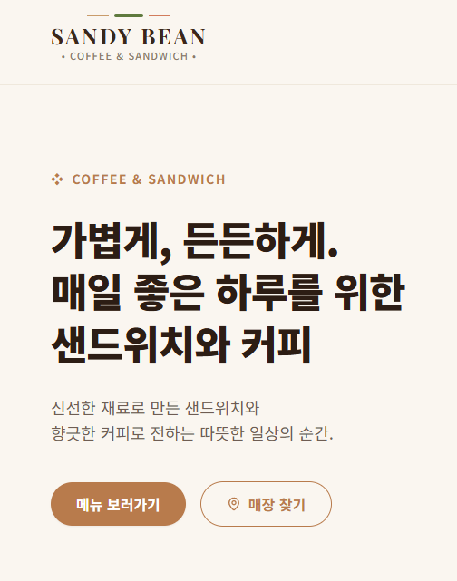
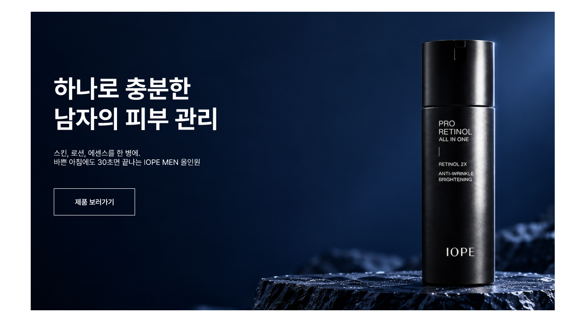

아이디어를 영상으로 제작해 효과적으로 전달하는
크리에이터 이현명입니다.
편집과
모션 그래픽을 중심으로 작업하며,
그래픽 디자인과 생성형 AI를 활용해 표현의 범위를 넓혀가고 있습니다.
Featured Works

브랜드 광고 모션 그래픽
복잡하게 느껴지는 메뉴 선택 과정을 ‘썹픽’이라는
간편한 해결책으로
전달하기 위해,
빠른 편집 리듬과 키네틱 모션을 활용한 브랜드 광고.

한 그루 나무의 기억
자연과 나무를 지켜야 한다는 메시지를 전달하기 위해,
한 그루 나무가 기억하는 자연의 변화를
캐릭터 중심의
짧은 이야기로 표현한 공모전 출품 영상.

끝없이 순환하는 철강
철강의 지속 가능한 가치를 전달하기 위해,
생산·사용·재활용을 거쳐 다시 자원이 되는 과정을
단계적인 장면 전환으로 구성한 공모전 출품 영상.

TO.X 키네틱 타이포그래피
음악의 리듬과 가사에 담긴 감정을 시각화하기 위해,
글자의 크기와 움직임, 화면 전환의 속도를 조절해
곡의 분위기를 표현한 키네틱 타이포그래피 프로젝트.
음악 플레이리스트
음악을 감상하며 가사를 편하게 읽을 수 있도록,
곡의 분위기에 맞춘 배경과 회전하는 LP 모션,
가사 자막을 결합해 제작한 영상 시리즈.

시네마틱 웨딩 오프닝
결혼식 시작 전 신랑·신부를 인상적으로 소개하기 위해,
넷플릭스의 화면 구성을 참고한 타이틀 애니메이션과
장면 전환을 적용한 시네마틱 식전 영상.

스타벅스 3단 리플렛 디자인
스타벅스 딜리버스의 주요 정보를 효과적으로
전달하기 위해,
브랜드 색상과 타이포그래피를 바탕으로 정보의 우선순위를
고려해 구성한 3단 리플렛 디자인.

연세대 2단 리플렛 디자인
학생들의 꿈을 지원하는 장학금 모금의 취지를 알리고,
후원 참여에 필요한 정보를 쉽게 확인할 수 있도록
내용의 흐름을 구성한 2단 리플렛 디자인.

민생지원금 안내 카드뉴스
민생지원금 정보를 쉽게 전달하기 위해,
친근한 일러스트와 초록 계열 색상을 활용해
단계별로 구성한 6페이지 카드뉴스.

공기업 취업특강 홍보 포스터
취업특강의 주요 정보를 쉽게 전달하기 위해,
일러스트와 정보의 우선순위를 활용해
핵심 내용을 명확하게 구성한 포스터.

브랜드 웹사이트 제작
직접 기획한 브랜드의 콘셉트를 바탕으로,
AI를 활용해 디자인과 인터랙션을 구성하고
반응형 웹 화면으로 구현한 프로젝트.

IOPE MEN 웹사이트 리디자인
프리미엄 남성 스킨케어 이미지를 전달하기 위해,
제품 정보의 구조와 시각적 흐름을 재구성한
데스크톱 웹 UI 콘셉트 디자인.

IOPE MEN 제품 상세페이지
제품의 주요 특징과 사용 효과를 쉽게 전달하기 위해,
정보의 우선순위와 시각적 흐름을 고려해 구성한
상세페이지 디자인.
Skills & Capabilities
Video & Motion
Premiere Pro, After Effects를 통한 컷 편집, 모션 그래픽 제작 및 연출
View detailsGraphic Design
Photoshop, Illustrator 기반의 그래픽 디자인, 홍보 리플렛 및 카드뉴스 제작
View detailsWeb & Code
HTML5, CSS3, JavaScript 및 AI를 활용한 웹사이트 제작과 수정
View detailsCreative AI Workflow
생성형 AI를 활용한 효율적인 프로덕션 파이프라인 구축, 시나리오 수정 및 작성
View detailsExperience
지역 연계 영상자서전 제작 프로젝트
재향군인의 이야기를 기록하는 영상자서전 제작에 참여해 인터뷰 촬영과 영상 편집을 담당했습니다.
영상 공모전 출품 및 콘텐츠 제작 활동
AI 기반 공모전 영상과 소셜 미디어용 숏폼·롱폼 콘텐츠, 키네틱 타이포그래피 영상을 제작했습니다.